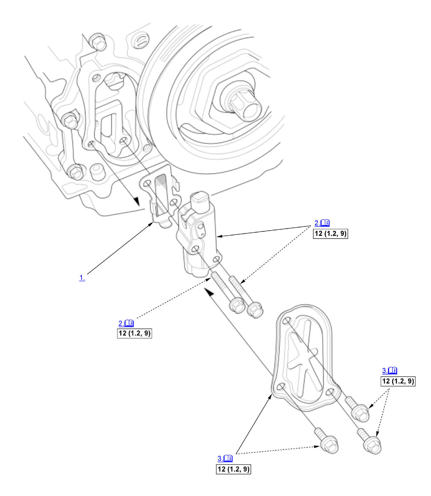

Cam Chain Auto-Tensioner Removal and Installation (K20C1) (2017 2018 2019 2020 2021): Installation: Procedure
NOTE:
Numbered call-outs in figure pertain to list numbers in following procedure.
Fig 1: Exploded View Of Cam Chain Auto-Tensioner Components With Torque Specifications For Installation (K20C1 - 2017-21)

Courtesy of HONDA, U.S.A., INC. |
Detailed information, notes, and precautions |
 |
Torque: N.m (kgf.m, lbf.ft) |
- Cam Chain Auto-Tensioner Filter - Install
- Cam Chain Auto-Tensioner - Install
1. Compress the cam chain auto-tensioner when replacing the cam chain. Remove the pin (A) from the cam chain auto-tensioner that was installed during removal. Turn the plate (B) counterclockwise, to release the lock, then press the rod (C), and set the first cam (D) to the first edge of the rack (E). Insert the 1.2 mm (3/64 in) diameter pin back into the holes (F).
NOTE: If the cam chain auto-tensioner is not set up as described, the cam chain auto-tensioner will be damaged.2. Install the cam chain auto-tensioner. 3. Remove the pin (A) from the cam chain auto-tensioner.
- Chain Case Cover - Install
NOTE: Apply liquid gasket to the cam chain case mating surface of the chain case cover, and to the inside edge of the threaded bolt holes.
- Engine Undercover - Install
- Right Front Wheel - Install